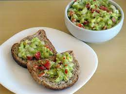

Minha comida favorita
Guaca-mole
Ingredientes
- 1 abacate brasileiro médio (ou 4 avocados)
- 1 tomate grande sem sementes
- 1 cebola pequena
- 2 dentes de alho bem socados
- 1 maço de coentro
- 1 pimenta malagueta sem sementes
- suco de 1 limão grande
azeite extra virgem
sal

VOLTAR